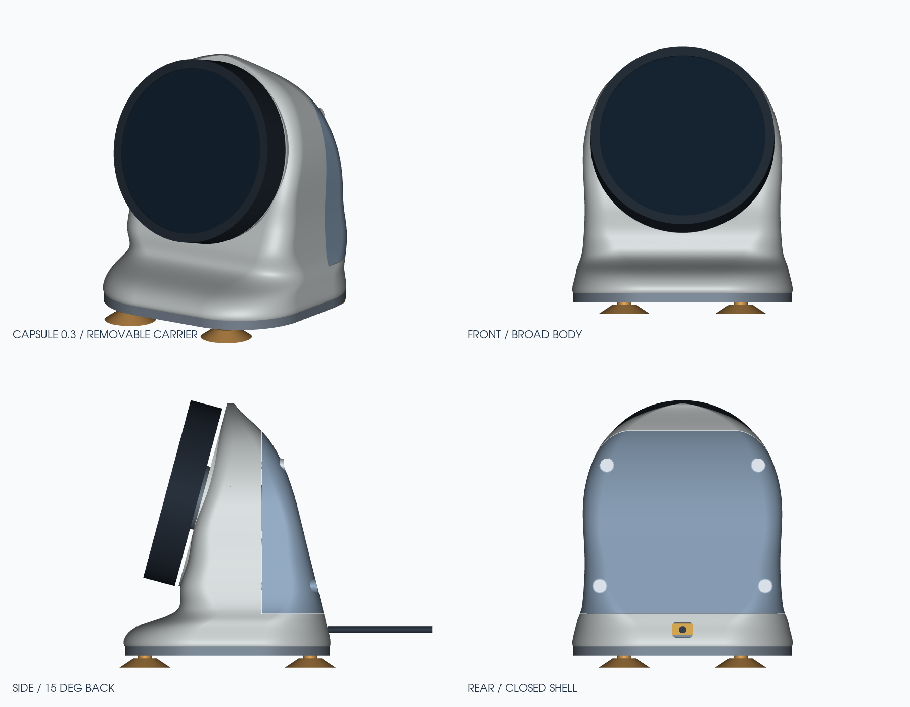
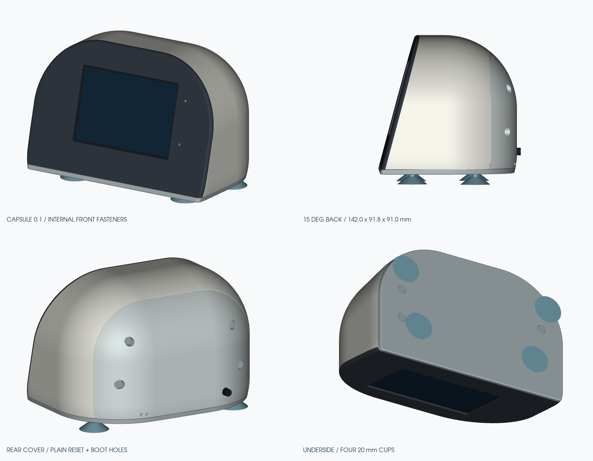
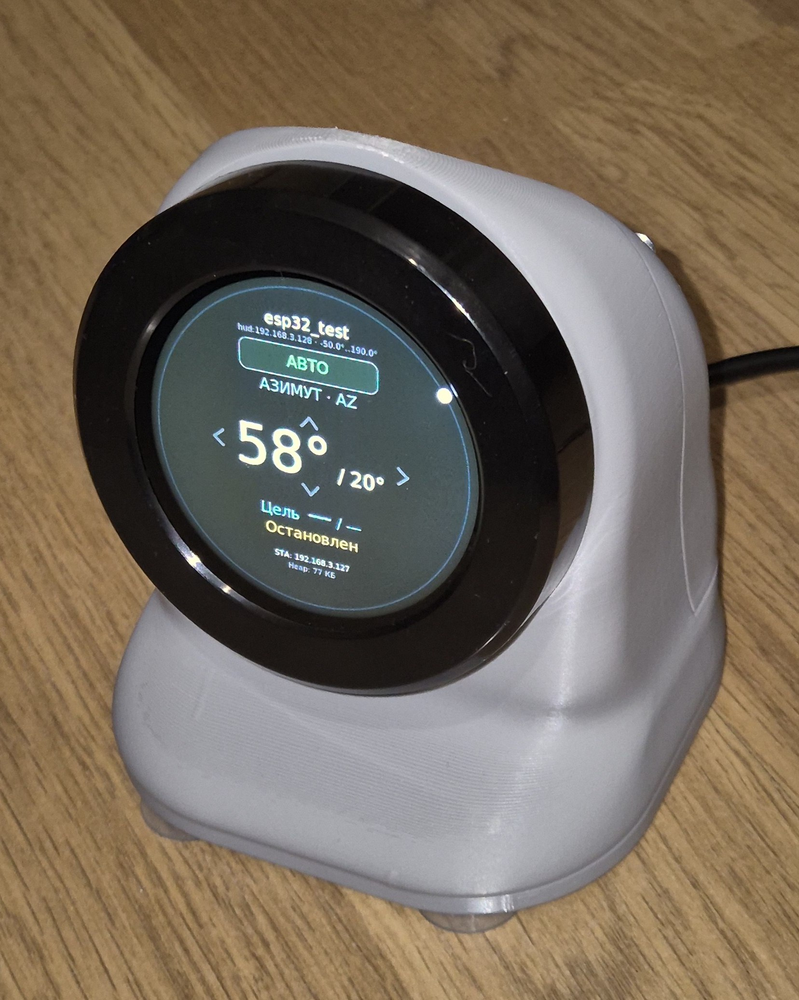

КРУГЛЫЙ ДИСПЛЕЙ · КОМПЛЕКТ 0.3
Elecrow CrowPanel 2.1
Свободное кольцо энкодера, съёмный держатель и задняя крышка. В основании — утяжелитель, магниты и присоски.
PETG · сопло 0,4 ммОснование 94 × 88 ммНаклон 15°
Два настольных корпуса с наклоном 15°. Рассмотрите конструкцию в 3D, скачайте файлы для печати и соберите свой комплект.

Свободное кольцо энкодера, съёмный держатель и задняя крышка. В основании — утяжелитель, магниты и присоски.

Горизонтальный экран, кассета интерфейса LDG и кабельный зажим. Внутренний крепёж лицевой рамки и четыре присоски.

В инструкциях — ориентация деталей, настройки печати, размеры крепежа и порядок сборки. Для подбора посадок в каждом комплекте есть отдельные пробники.
Перейти к инструкциям →